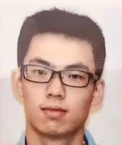

Hello, my name is Jiawei Xing. I'm currently a PhD candidate at The Ohio State University. In Dr. Igor Jouline lab, I use computational methods to study protein structures and evolution. My current research topic focuses on the most common sensory domain in signal transduction systems, Per-Arnt-Sim (PAS) domain.
With a background in biology and an interest in computer science, I'm passionate about combining computer and biology togehter to better understand the secret of life sciences.
2019-present: The Ohio State University. PhD, Microbiology
2015-2019: Beijing Normal University (北京师范大学). BS, Biological Sciences (国家基础学科拔尖学生培养计划)
2021.1-present: Graduate research assistant at The Ohio State University
2019.8-2020.12: Graduate teaching assistant at The Ohio State University
2018.11-2019.4: Undergraduate thesis at Institute of Microbiology, Chinese Academy of Sciences
2018.7-2018.10: Undergraduate summer intern at IMCB (Institute of Molecular and Cell Biology), A*STAR (Agency for Science, Technology and Research), Singapore
2017.3-2018.6: Undergraduate project at Beijing Normal University (国家级大学生创新创业训练计划校级优秀项目)
2017.3-2017.11: BNU-China team for 2017 iGEM (International Genetically Engineered Machine)